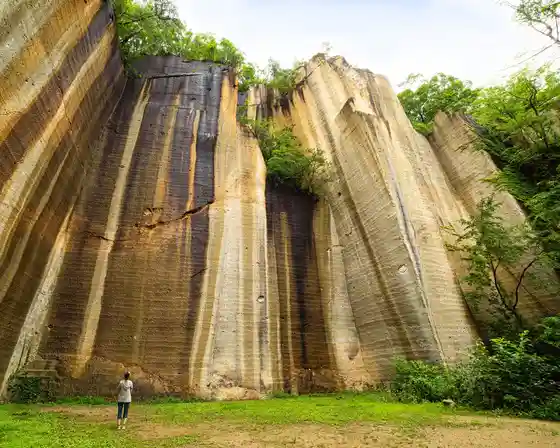
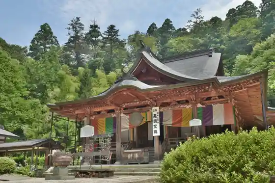
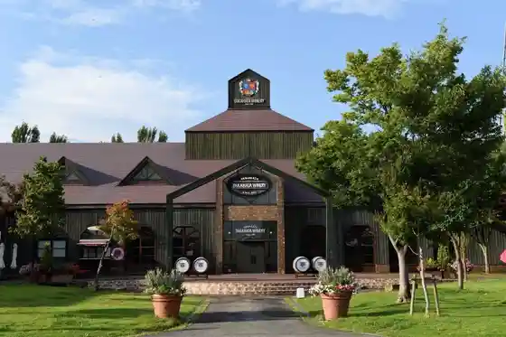
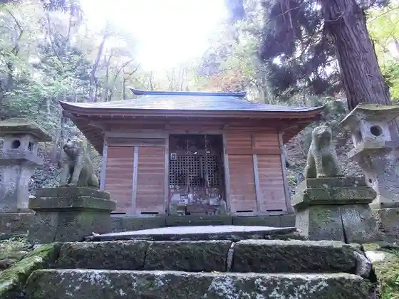

Uri Wariishi Niwa Park
Takahata, Yamagata · 0238-52-4482 · Official / source link

Kameoka Monju Do
Takahata, Yamagata · 0238-52-0444 · Official / source link

Takahata Wainarii
Takahata, Yamagata · 0238-40-1840 · Official / source link

Inu no Miya Neko no Miya
Takahata, Yamagata · 0238-52-0229 · Official / source link

Takahata Eki
Takahata, Yamagata · 050-2016-1600 · Official / source link
Kyu Takahata Eki
Takahata, Yamagata · Official / source link
Akutsu Hachiman Shrine
Takahata, Yamagata · 0238-52-5990 · Official / source link
Mahoroba Ko no Sato Rekishi Park
Takahata, Yamagata · 0238-57-3844 · Official / source link
Takahata Taiyo Kan
Takahata, Yamagata · 0238-57-4177 · Official / source link
Showa Mini Museum
Takahata, Yamagata · 0238-52-0354 · Official / source link
Ichi no Sawa Cave
Takahata, Yamagata · 0238-52-4472 · Official / source link
Mahoroba Kanko Orchard
Takahata, Yamagata · 0238-52-4366 · Official / source link
Hato Mine Highlands
Takahata, Yamagata · 0238-57-3844 · Official / source link
Hiru Sawa Mizumi
Takahata, Yamagata · 0238-57-3844 · Official / source link
Hyuga Cave
Takahata, Yamagata · 0238-52-1111 · Official / source link
Gyokuryo In Gohyaku Rakan Zo
Takahata, Yamagata · 0238-52-1357 · Official / source link
Mahoroba no Greenway (Takahata Eki Mahoroba Ko no Sato Rekishi Park)
Takahata, Yamagata · 0238-57-3844 · Official / source link
Yamagata Prefectural Ukitamu Fudoki no Oka Koko Museum
Takahata, Yamagata · 0238-52-2585 · Official / source link
Yuki no Sato Sansan
Takahata, Yamagata · 0238-58-3060 · Official / source link
Otachi Cave
Takahata, Yamagata · 0238-52-4472 · Official / source link
Kannon Iwa
Takahata, Yamagata · 0238-52-1111 · Official / source link
Daishoji
Takahata, Yamagata · 0238-52-0444 · Official / source link
Obakoya
Takahata, Yamagata · 0238-52-0652 · Official / source link
Shi Fuku Jiseki
Takahata, Yamagata · 0238-52-1111 · Official / source link
Hayama Kanko Takushii
Takahata, Yamagata · Official / source link
Suzu Numa
Takahata, Yamagata · 0238-52-4482 · Official / source link
Hayama Burial Mound
Takahata, Yamagata · 0238-52-1111 · Official / source link
Otaki (Takahata)
Takahata, Yamagata · 0238-57-3844 · Official / source link
Takahata Castle Ruins
Takahata, Yamagata · 0238-52-1111 · Official / source link
Genji Hotaru to Kajika Kaeru Sansakudo
Takahata, Yamagata · 0238-52-1001 · Official / source link
Sho Yuyama
Takahata, Yamagata · 0238-57-3844 · Official / source link
Takafusa Shrine
Takahata, Yamagata · 0238-56-2438 · Official / source link
Gi Yama Masamune Ko no Haka (Yashu Kura Hakasho)
Takahata, Yamagata · 0238-52-1111 · Official / source link
Coco de cachette Izumiya
Takahata, Yamagata · 0238-20-6668 · Official / source link
Hi Hako Iwa Cave
Takahata, Yamagata · 0238-52-4472 · Official / source link
Yoshi Masa Tera
Takahata, Yamagata · 0238-52-3412 · Official / source link
Date Ie no Fumbo (Shi Fuku Jiseki)
Takahata, Yamagata · 0238-52-1111 · Official / source link
Takahata Local History Museum
Takahata, Yamagata · 0238-52-4523 · Official / source link
Yoneorikanko Center
Takahata, Yamagata · 0238-57-2140 · Official / source link
Ryu Hisashi In Dainichi Nyorai Sekibutsu
Takahata, Yamagata · 0238-52-0229 · Official / source link
Sho Yuyama Promenade
Takahata, Yamagata · 0238-57-3844 · Official / source link
Hayama Park
Takahata, Yamagata · 0238-57-3844 · Official / source link
Seishi Kannon
Takahata, Yamagata · 0238-52-0229 · Official / source link
Benibana Some Experience / Takahata
Takahata, Yamagata · 0238-57-2140 · Official / source link
Mitsuwa Takushii
Takahata, Yamagata · Official / source link
Nuka no Me Suihen no Raku Ko
Takahata, Yamagata · 0238-57-3505 · Official / source link
Gan Shima Shrine
Takahata, Yamagata · 0238-52-4482 · Official / source link
Go Samurai Yama
Takahata, Yamagata · 0238-52-4482 · Official / source link
Myojin Yama Park
Takahata, Yamagata · 0238-52-1111 · Official / source link